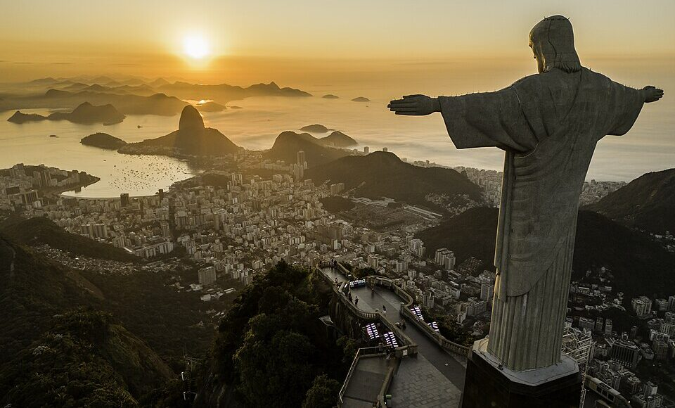
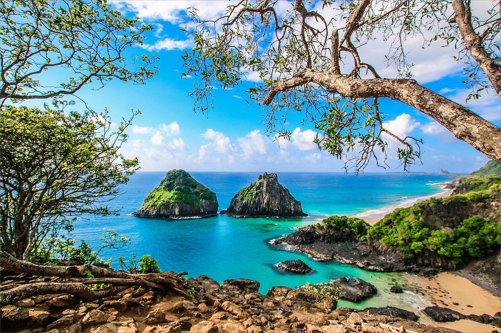
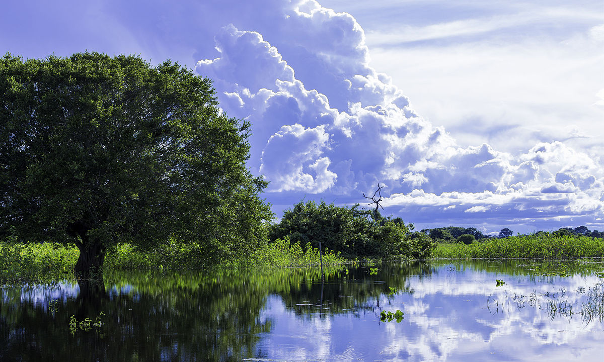

O Cristo Redentor é a famosa estátua art déco de Jesus Cristo que fica no topo do Morro do Corcovado, no Rio de Janeiro. Ele é mundialmente conhecido por ser uma das Sete Maravilhas do Mundo Moderno e um símbolo de fé, paz e acolhimento para visitantes do mundo todo. A estátua está localizada a 710 metros de altitude, dentro do Parque Nacional da Tijuca, oferecendo uma vista espetacular da cidade. É um monumento que atrai milhões de turistas anualmente e se tornou um dos cartões-postais mais icônicos do Brasil. Para evitar multidões, o início da manhã e o fim da tarde são os horários mais indicados, sendo a época de baixa temporada a melhor para visitar com mais tranquilidade. A experiência de visitá-lo não se resume à vista, pois a história e o simbolismo da obra tornam o passeio inesquecível.
Nas Cataratas do Iguaçu, a experiência pelas passarelas é diretamente influenciada pelo volume de água, que atinge seu ápice durante a época de cheia, geralmente nos meses mais chuvosos. Ao percorrer as passarelas, os visitantes sentem a força impressionante das quedas, especialmente na Garganta do Diabo, onde a bruma densa é inevitável. Durante a cheia, o aumento do volume de água intensifica a paisagem e o som, mas pode levar ao fechamento temporário de trechos das passarelas por segurança. Para quem busca mais adrenalina, o passeio de barco Macuco Safari oferece uma imersão ainda maior, levando o público para perto das quedas, onde todos se molham na água turbulenta. Apesar dos desafios da época de cheia, o espetáculo da natureza em sua força máxima é uma visão inesquecível.

Nos Lençóis Maranhenses, a paisagem é moldada pela natureza cíclica das lagoas sazonais, que se formam e desaparecem com as estações do ano. Após o período de chuvas, entre maio e setembro, a região atinge o ápice de sua beleza, com as lagoas cheias e em contraste com as vastas dunas de areia branca. O acesso a essas maravilhas naturais é feito por trilhas de areia, percorridas exclusivamente por veículos 4x4, que levam os visitantes a circuitos como a Lagoa Bonita e a Lagoa Azul. Essas expedições em veículos off-road não só garantem segurança, mas também proporcionam uma experiência autêntica e emocionante por entre o terreno desafiador do parque. Ao longo do passeio, a possibilidade de paradas para banho em lagoas cristalinas e para admirar o pôr do sol completa a aventura. As lagoas, com suas águas refrescantes, oferecem um alívio bem-vindo após a jornada pelas dunas.

A Chapada Diamantina encanta com suas inúmeras cachoeiras de águas cristalinas, que brotam em meio à vegetação e descem por imponentes cânions. As trilhas famosas, como a do Vale do Pati, atraem aventureiros do mundo todo, oferecendo dias de imersão na natureza. Do alto dos mirantes, como o do Morro do Pai Inácio, é possível ter uma visão deslumbrante da imensidão de morros e chapadas. Além das paisagens, a região também preserva a história do garimpo, presente nas vilas charmosas e nas ruínas de pedra. Um verdadeiro paraíso para quem busca aventura, paisagens inspiradoras e o contato íntimo com a natureza exuberante da Bahia.

As praias preservadas de Fernando de Noronha são o cenário perfeito para a rica vida marinha que se abriga em suas águas. Visando proteger esse delicado ecossistema, regras ambientais rigorosas controlam o turismo e a interação com a natureza local. Mergulhadores e praticantes de snorkeling podem explorar a deslumbrante biodiversidade marinha, observando tartarugas, golfinhos e uma variedade de peixes em seu habitat natural. As águas cristalinas oferecem visibilidade excepcional, proporcionando uma experiência imersiva e inesquecível para quem pratica mergulho. Essas medidas de conservação garantem que a fauna e a flora marinhas permaneçam intactas para as futuras gerações. Dessa forma, os visitantes desfrutam de um paraíso natural enquanto contribuem para a sua preservação.
Para observar a rica fauna do Pantanal, a melhor época é, sem dúvida, a estação seca, de maio a outubro, quando a água recua e os animais se concentram nos pontos remanescentes. Nesse período, a fauna se torna mais visível, aumentando significativamente as chances de avistar mamíferos como capivaras, cervos e até mesmo a onça-pintada, o felino mais emblemático da região. O safári fotográfico, realizado em veículos adaptados, permite aos visitantes explorar a paisagem e registrar esses momentos únicos de perto. Complementando a experiência, os passeios de barco e chalana oferecem uma perspectiva diferente, permitindo a observação da vida selvagem às margens dos rios e corixos, como jacarés e diversas espécies de aves. A combinação dessas atividades garante uma imersão completa na natureza exuberante do Pantanal, tornando a viagem inesquecível. É a oportunidade perfeita para testemunhar a biodiversidade desse santuário ecológico em seu habitat natural.
| ROTEIRO | PONTOS TURISTICOS | DIAS | TRANSPORTE INTERNO | ATIVIDADES/INGRESSOS | ALIMENTAÇÃO POR DIA | TOTAL ESTIMADO POR PESSOAS |
|---|---|---|---|---|---|---|
| Aventura | Pantanal, Chapada Diamantina | 20 | R$5000,00 | R$6640,00 | R$3000,00 | R$14640,00 |
| Águas limpas | Lençóis Maranhenses, Fernando de Noronha | 20 | R$8000,00 | R$4040,00 | R$6000,00 | R$18040,00 |
| Sete Maravilhas | Cristo Redentor, Cataratas do Iguaçu | 6 | R$800,00 | R$1300,00 | R$1200,00 | R$3300,00 |